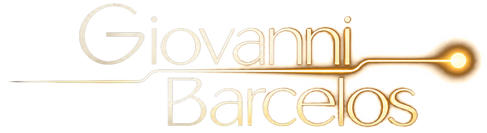
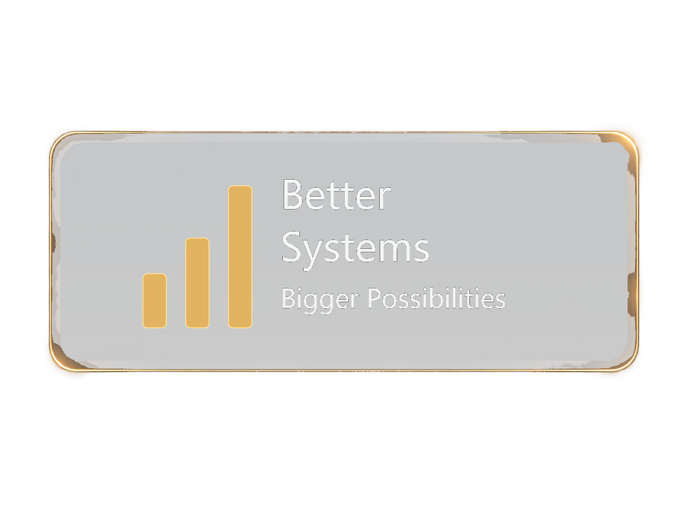

LEADERSHIP & FACILITATION
Leadership that starts with clarity and execution.
Teaching, academic coordination, hospitality management and operational coordination taught me to align people, information and next steps around the work at hand.
01SYSTEMS FOR A MORE HUMAN TOMORROW
I turn operational friction into practical systems that make work move.

REMOTE WORK
Supporting U.S. real estate operations remotely across North and South Carolina with clarity, coordination and follow-through. From CRM management to client support, I help keep operations organized, people informed and results moving — no matter the distance.

Learn the operation, identify friction, connect information and reduce avoidable manual work. The tools change; the operating logic is consistent.
Coordination, documentation, schedules, follow-up, handoffs and cross-functional execution.
Custom workflows, CRM logic, operational controls and AI-assisted tools built around real work.
Buyer and seller transaction coordination, MLS Canopy, SkySlope, Zillow Showcase and CMA support.
Lead intake, pipeline organization, follow-up, marketing triggers and continuity through closing.
WordPress, legacy preservation, SEO content, YouTube workflows and digital production.
English/Portuguese communication, teaching, interpretation, sales prospecting, marketing and client support.
While supporting a U.S. real estate business, I connected lead intake, CRM data, marketing coordination, buyer and seller transaction coordination, closing records, time tracking and finance support into a tailored operational workflow instead of relying on disconnected manual steps.
Instead of repeatedly handling a Seller Net Sheet as a static document, I converted its logic into a lightweight workflow built with HTML and Google tools. I redesigned the process to capture information once, reduce repetitive handling and allow transaction data to feed later operational steps.
A Seller Net Sheet works best when its information can move forward without being rebuilt at every step.
I rebuilt an outdated WordPress presence on a new platform while preserving the original site on a separate legacy domain as a working archive and reference. The new environment kept years of content, context and SEO value accessible while supporting current publishing needs.
The new presence can move forward while the legacy environment remains available as a working reference.
I structured an end-to-end project for an architect returning to professional practice. The work connected an identity interview, positioning, website, private development environment, data recovery and persistence, conceptual studies and opportunity research. The goal was not to manufacture experience, but to create a system that helps the professional learn, produce evidence, present herself honestly and return to the market.
Video editing is a parallel operating track: not only cutting footage, but organizing the message, pacing the sequence and making the publishing process repeatable.
Real estate, ERP sales, teaching, coordination, marketing, events, hospitality and digital work developed a combination of commercial awareness, communication, process improvement and initiative.
The same operating discipline extends beyond task delivery: creating clarity, making ideas easier to follow and keeping work moving across people, tools and handoffs.
Teaching, academic coordination, hospitality management and operational coordination taught me to align people, information and next steps around the work at hand.
01Interpretation, teaching and client-facing work shaped a practical communication style: clarify the context, make the process visible and keep the next action clear.
02In 100% remote U.S. real estate operations, I coordinated calendars, email, listings, transactions and workflow continuity across the people and systems involved.
03Experience across different environments strengthened communication, adaptability and confidence under pressure.
Provided English–Portuguese interpretation for Mariah Carey's team during a specific engagement in Barretos.
Provided professional English–Portuguese interpretation for senior international leadership at Agrishow.
Teaching experience plus English–Portuguese translation of books and texts.
Prospecting experience across software and property markets.
Continuing education across commerce and marketing.
My strongest pattern is initiative. A request for a list, document or repetitive control often became an opportunity to design a better workflow around the work. I am comfortable learning unfamiliar tools because the starting point is usually not the software itself; it is understanding the bottleneck, the information and the people who depend on the process.
Download the English, Portuguese or Spanish ATS version.